Sep gaban-th, 2021¶
Motivation: This has the most succesfull registration of Nissl to Yale N162 0.1 mm
# HIDE CODE
import os
import sys
import nibabel as nib
import networkx as nx
from time import time
from pprint import pprint
from copy import deepcopy as dc
from os.path import join as pjoin
from myterial import orange, blue_grey
from IPython.display import display, IFrame, HTML
from matplotlib.colors import rgb2hex, to_rgb
import matplotlib.pyplot as plt
import seaborn as sns
# set style & no interpolalation
import matplotlib
matplotlib.rcParams['image.interpolation'] = 'none'
sns.set_style('whitegrid')
# tmp & extras dir
git_dir = pjoin(os.environ['HOME'], 'Dropbox/git')
tmp_dir = pjoin(git_dir, 'jb-Ca-fMRI/tmp')
extras_dir = pjoin(git_dir, 'jb-Ca-fMRI/_extras')
lfr_dir = pjoin(os.environ['HOME'], 'Documents/workspaces/lfr/binary_overlapping')
# GitHub
sys.path.insert(0, pjoin(git_dir, '_Ca-fMRI'))
from register.atlas import Allen
from register.parcellation import Parcellation
from analysis.hierarchical import Hierarchical
from analysis.bootstrap import *
from analysis.svinet import *
from analysis.group import *
from analysis.lfr import *
from utils.render import *
from utils.plotting import *
from model.mouse import Mice
from model.configuration import Config
# warnings
import warnings
warnings.filterwarnings('ignore', category=DeprecationWarning)
%%time
mice = Mice(Config(256, resolution=25), load_allen=True, load_parcel=True, load_preproc=True)
CPU times: user 7.2 s, sys: 4.8 s, total: 12 s
Wall time: 20.6 s
from register.register import *
reg = Register(mice)
kwargs = {
'types': ['SyN', 'SyNAggro'],
'grads': [0.25, 0.3],
'syn_bins': [32],
'aff_bins': [13],
'aff_rates': [0.2, 0.8],
'mi_q': 0.5,
'n_seeds': 5,
}
kwargs
{ 'types': ['SyN', 'SyNAggro'], 'grads': [0.25, 0.3], 'syn_bins': [32], 'aff_bins': [13], 'aff_rates': [0.2, 0.8], 'mi_q': 0.5, 'n_seeds': 5 }
%%time
reg.register_anat(save_results=True, **kwargs)
bad det -1 v 1 u -1
bad det -1 v 1 u -1 new 1
Symmetric_N162, perf: seed 0 type SyN grad 0.3 syn_bin 32 aff_bin 13 aff_rate 0.2 metric sym score 0.987587
registering anat: sub-SLC01_ses-1: 0%| | 0/30 [00:00<?, ?it/s] bad det -1 v -1 u 1
bad det -1 v -1 u 1 new 1
sub-SLC01_ses-1, perf: seed 2 type SyNAggro grad 0.3 syn_bin 32 aff_bin 13 aff_rate 0.2 metric sym score 0.981961
registering anat: sub-SLC01_ses-2: 3%|▋ | 1/30 [5:16:03<152:45:39, 18963.44s/it] bad det -1 v -1 u 1
bad det -1 v -1 u 1 new 1
sub-SLC01_ses-2, perf: seed 3 type SyN grad 0.3 syn_bin 32 aff_bin 13 aff_rate 0.2 metric sym score 0.974484
registering anat: sub-SLC01_ses-3: 7%|█▎ | 2/30 [10:28:37<146:32:13, 18840.47s/it] bad det -1 v 1 u -1
bad det -1 v 1 u -1 new 1
sub-SLC01_ses-3, perf: seed 0 type SyNAggro grad 0.3 syn_bin 32 aff_bin 13 aff_rate 0.2 metric sym score 0.962286
registering anat: sub-SLC02_ses-1: 10%|█▉ | 3/30 [15:41:04<140:58:55, 18797.62s/it] bad det -1 v 1 u -1
bad det -1 v 1 u -1 new 1
sub-SLC02_ses-1, perf: seed 1 type SyN grad 0.3 syn_bin 32 aff_bin 13 aff_rate 0.2 metric sym score 0.936319
registering anat: sub-SLC02_ses-2: 13%|██▌ | 4/30 [20:55:16<135:54:54, 18819.03s/it]
sub-SLC02_ses-2, perf: seed 4 type SyN grad 0.3 syn_bin 32 aff_bin 13 aff_rate 0.8 metric sym score 0.936449
registering anat: sub-SLC02_ses-3: 17%|███▏ | 5/30 [26:19:59<132:21:07, 19058.70s/it] bad det -1 v 1 u -1
bad det -1 v 1 u -1 new 1
sub-SLC02_ses-3, perf: seed 1 type SyN grad 0.3 syn_bin 32 aff_bin 13 aff_rate 0.2 metric sym score 0.946395
registering anat: sub-SLC03_ses-1: 20%|███▊ | 6/30 [31:49:44<128:42:11, 19305.49s/it] bad det -1 v -1 u 1
bad det -1 v -1 u 1 new 1
sub-SLC03_ses-1, perf: seed 0 type SyN grad 0.3 syn_bin 32 aff_bin 13 aff_rate 0.8 metric sym score 0.956925
registering anat: sub-SLC03_ses-2: 23%|████▍ | 7/30 [37:06:20<122:41:35, 19204.15s/it] bad det -1 v 1 u -1
bad det -1 v 1 u -1 new 1
sub-SLC03_ses-2, perf: seed 0 type SyNAggro grad 0.3 syn_bin 32 aff_bin 13 aff_rate 0.2 metric sym score 0.946528
registering anat: sub-SLC03_ses-3: 27%|█████ | 8/30 [42:14:41<115:59:29, 18980.44s/it]
sub-SLC03_ses-3, perf: seed 1 type SyNAggro grad 0.3 syn_bin 32 aff_bin 13 aff_rate 0.2 metric sym score 0.960585
registering anat: sub-SLC04_ses-1: 30%|█████▋ | 9/30 [47:23:10<109:51:37, 18833.19s/it] bad det -1 v -1 u 1
bad det -1 v -1 u 1 new 1
sub-SLC04_ses-1, perf: seed 1 type SyN grad 0.25 syn_bin 32 aff_bin 13 aff_rate 0.2 metric sym score 0.982141
registering anat: sub-SLC04_ses-2: 33%|██████ | 10/30 [52:37:26<104:40:04, 18840.22s/it] bad det -1 v -1 u 1
bad det -1 v -1 u 1 new 1
sub-SLC04_ses-2, perf: seed 4 type SyN grad 0.3 syn_bin 32 aff_bin 13 aff_rate 0.2 metric sym score 0.979793
registering anat: sub-SLC04_ses-3: 37%|██████▉ | 11/30 [57:49:50<99:16:43, 18810.70s/it] bad det -1 v 1 u -1
bad det -1 v 1 u -1 new 1
sub-SLC04_ses-3, perf: seed 1 type SyN grad 0.3 syn_bin 32 aff_bin 13 aff_rate 0.8 metric sym score 0.98143
registering anat: sub-SLC05_ses-1: 40%|███████▌ | 12/30 [63:09:33<94:37:10, 18923.89s/it] bad det -1 v 1 u -1
bad det -1 v 1 u -1 new 1
sub-SLC05_ses-1, perf: seed 1 type SyNAggro grad 0.3 syn_bin 32 aff_bin 13 aff_rate 0.8 metric sym score 0.976346
registering anat: sub-SLC05_ses-2: 43%|████████▏ | 13/30 [68:25:07<89:22:39, 18927.03s/it] bad det -1 v 1 u -1
bad det -1 v 1 u -1 new 1
## Oct 03 : This was 3 seeds, compare to 5 above ^
bad det -1 v 1 u -1
bad det -1 v 1 u -1 new 1
Symmetric_N162, perf: seed 0 type SyN grad 0.25 syn_bin 32 aff_bin 13 aff_rate 0.8 metric sym score 0.989239
registering anat: sub-SLC01_ses-1: 0%| | 0/30 [00:00<?, ?it/s] bad det -1 v -1 u 1
bad det -1 v -1 u 1 new 1
sub-SLC01_ses-1, perf: seed 1 type SyN grad 0.25 syn_bin 32 aff_bin 13 aff_rate 0.8 metric sym score 0.976612
registering anat: sub-SLC01_ses-2: 3%|▋ | 1/30 [2:21:01<68:09:43, 8461.52s/it] bad det -1 v -1 u 1
bad det -1 v -1 u 1 new 1
Test¶
base_mi = ants.image_mutual_information(reg.nissl, reg.nissl)
for key, anat in mice.T1w.items():
indiv = reg._prepare(anat.get_data(), 200)
tx_aff = f"{key}_space-CCF-3d_ants-Aff-init.mat"
tx_aff = pjoin(mice.cfg.tx_dir, tx_aff)
tx_aff = ants.read_transform(tx_aff)
indiv_aff = tx_aff.apply_to_image(indiv, reg.nissl, 'linear')
fig, axes = create_figure(1, 2, (10, 4))
axes[0].imshow(reg.nissl[300], cmap='Greys_r')
axes[1].imshow(indiv_aff[300], cmap='Greys_r')
mi = ants.image_mutual_information(reg.nissl, indiv_aff)
fig.suptitle(f"{key}, perf: {mi / base_mi:0.3f}", fontsize=15)
plt.show()
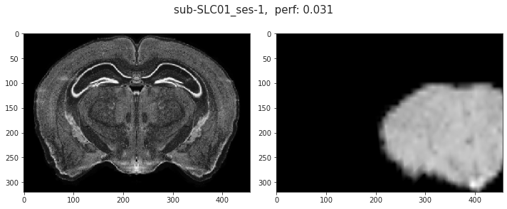
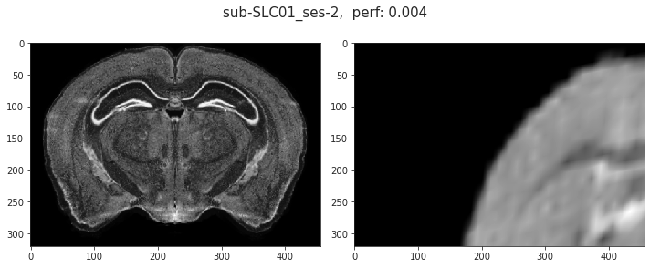
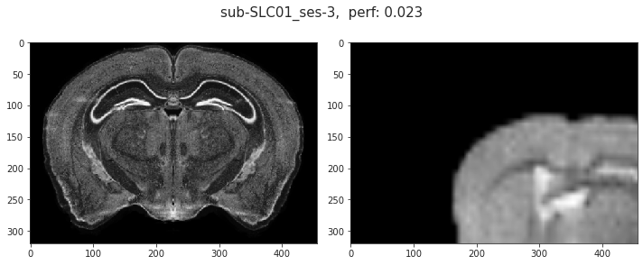
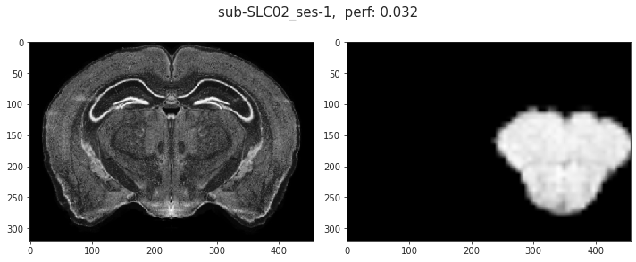
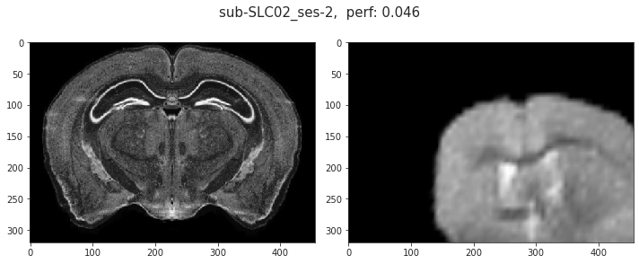
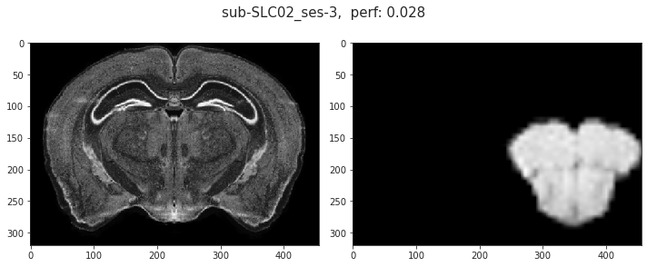
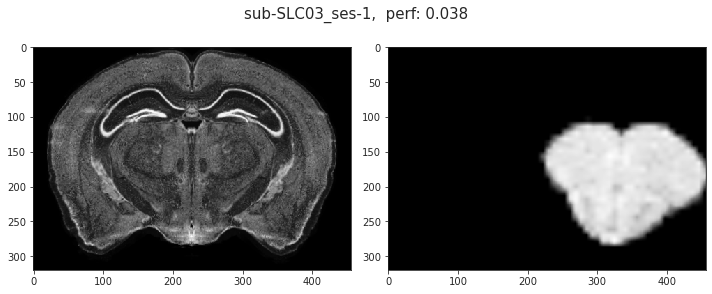
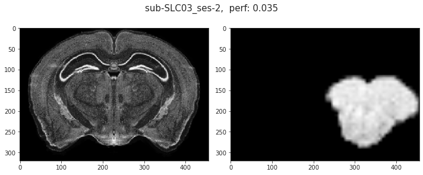
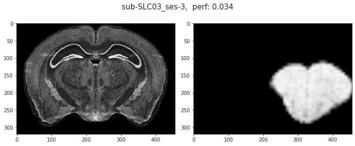
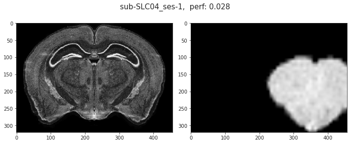
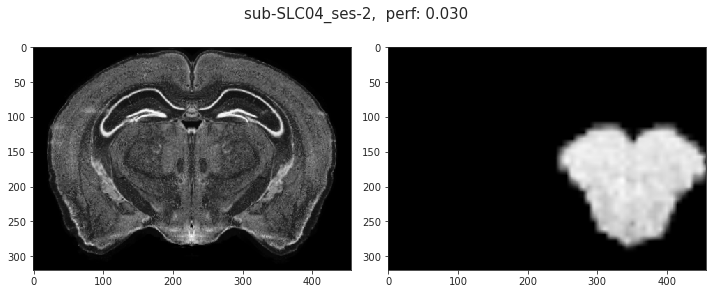
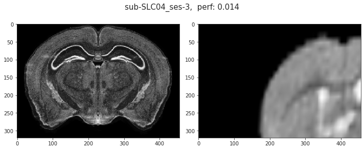
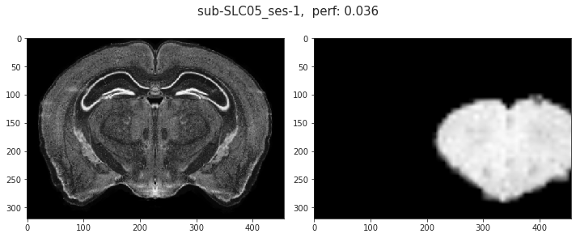
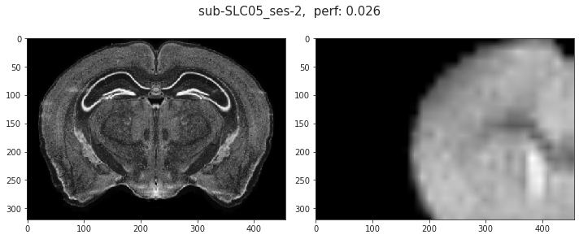
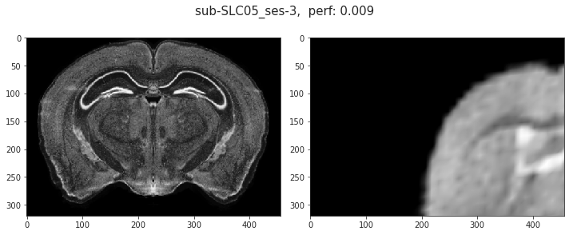
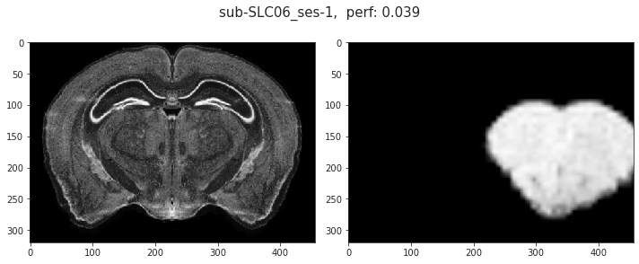
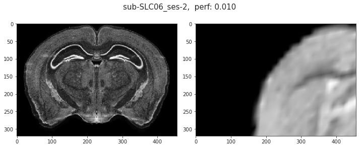
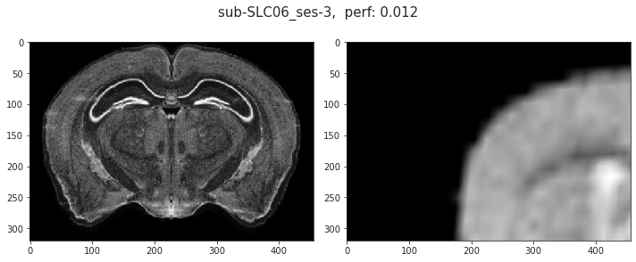
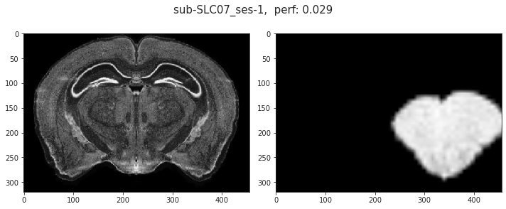
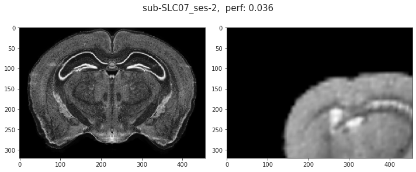
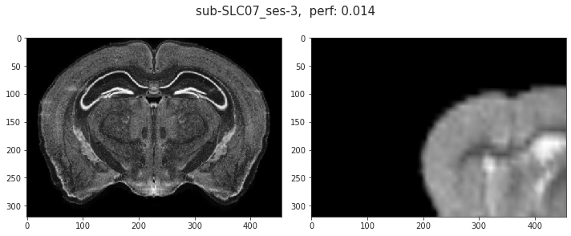
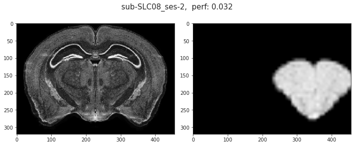
 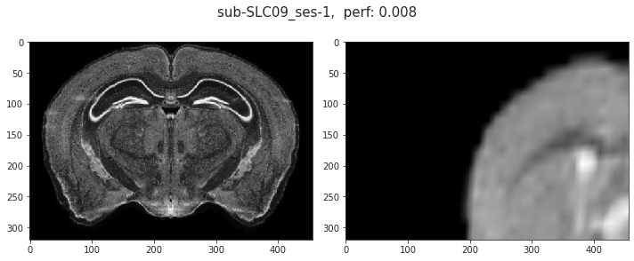
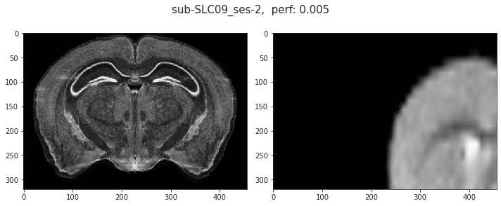
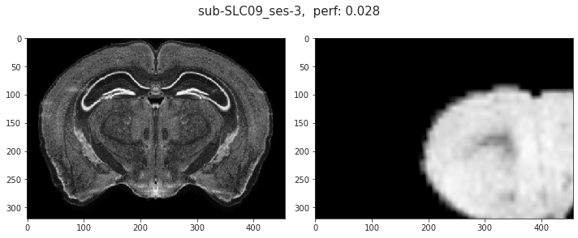
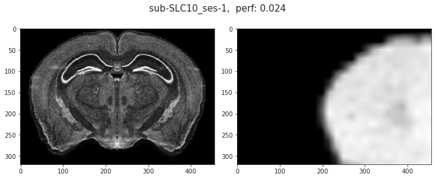
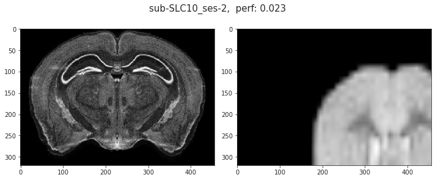
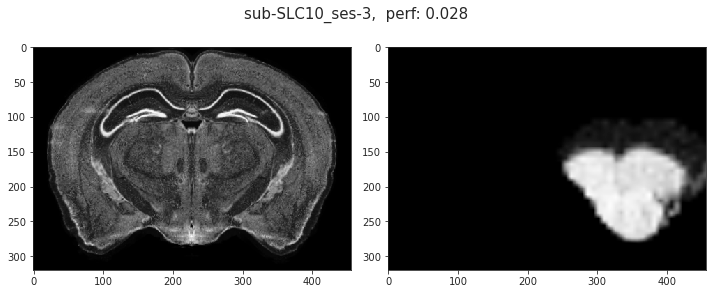
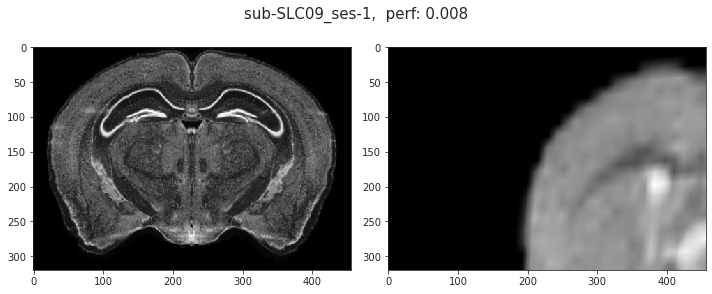
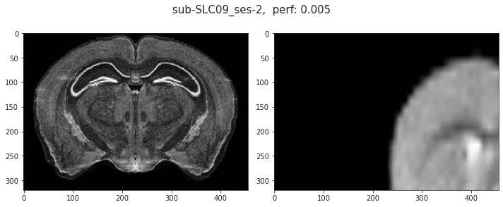
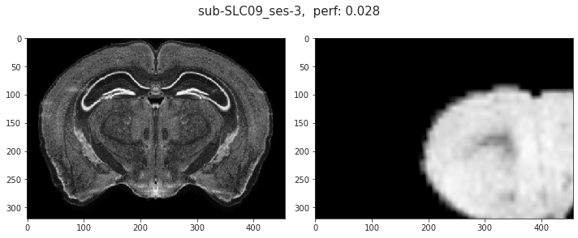
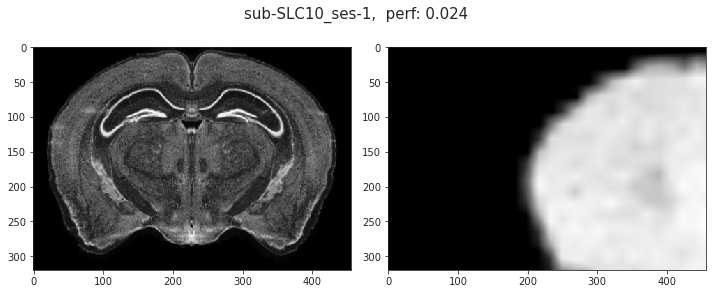
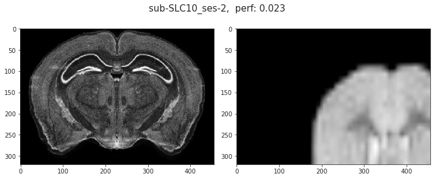
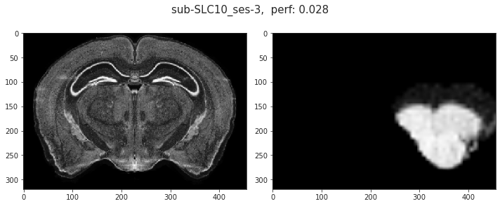
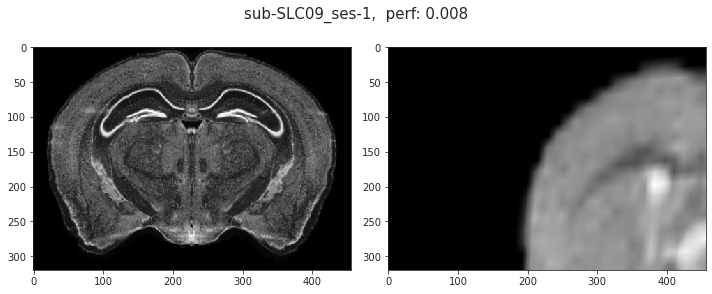
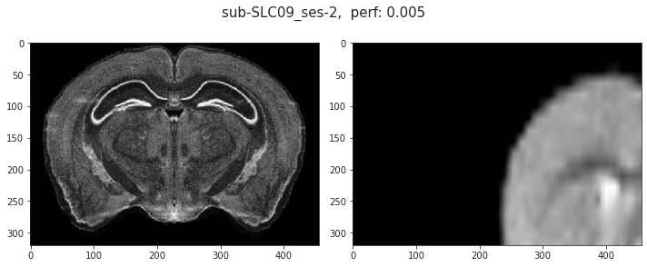
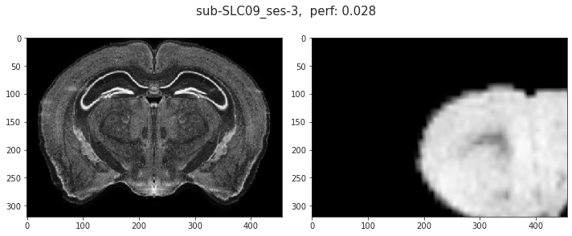
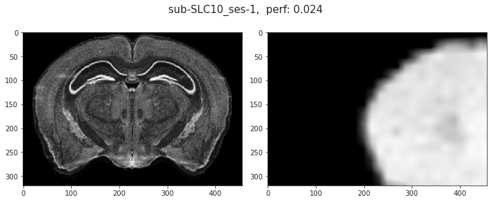
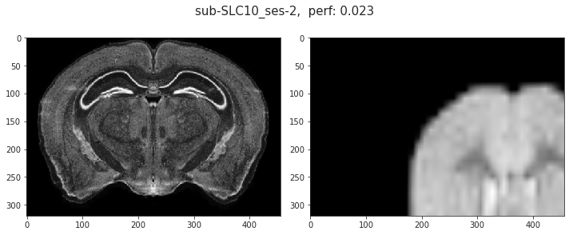
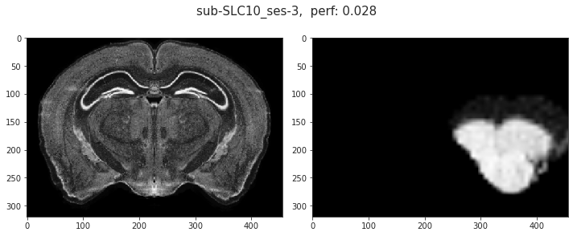
fig, axes = create_figure(1, 2, (8, 3.1))
axes[0].imshow(reg.nissl[300], cmap='Greys_r')
axes[1].imshow(indiv_aff[300], cmap='Greys_r')
# mi = ants.image_mutual_information(reg.nissl, indiv_aff)
fig.suptitle(f"{key}, perf: {mi / base_mi:0.3f}", fontsize=15)
plt.show()
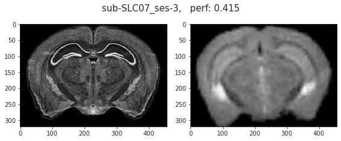
key = 'sub-SLC07_ses-3'
indiv = reg._prepare(mice.T1w[key].get_data(), 200)
indiv
ANTsImage (RAI) Pixel Type : float (float32) Components : 1 Dimensions : (78, 64, 64) Spacing : (200.0, 200.0, 200.0) Origin : (0.0, 0.0, 0.0) Direction : [1. 0. 0. 0. 1. 0. 0. 0. 1.]
tx_aff = f"{key}_space-CCF-3d_ants-Aff-init.mat"
tx_aff = pjoin(mice.cfg.tx_dir, tx_aff)
tx_aff = ants.read_transform(tx_aff, 3)
tx_aff.parameters
array([ 7.61217237e-01, -2.25951836e-01, 3.17604810e-01, 3.80213410e-01, 6.69637799e-01, -2.56995130e-02, -2.82953203e-01, 7.90555328e-02, 7.77895510e-01, -2.63565674e+03, -1.94909814e+03, -2.54836377e+03])
indiv_aff = tx_aff.apply_to_image(indiv, reg.nissl, 'linear')
fig, axes = create_figure(1, 2, (8, 7))
axes[0].imshow(reg.nissl[300], cmap='Greys_r')
axes[1].imshow(indiv_aff[300], cmap='Greys_r')
<matplotlib.image.AxesImage object at 0x7f68c47856a0>
base_mi = ants.image_mutual_information(reg.nissl, reg.nissl)
mi = ants.image_mutual_information(reg.nissl, indiv_aff)
mi / base_mi
0.013736391173934145
mice = Mice(Config(17, resolution=25), load_preproc=True)
from register.register import *
reg = Register(mice, in_house_res=100)
base_mi = ants.image_mutual_information(reg.nissl, reg.nissl)
%%time
txfile = ants.affine_initializer(
fixed_image=reg.nissl,
moving_image=indiv,
search_factor=20,
radian_fraction=0.0001,
use_principal_axis=False,
local_search_iterations=10,
)
tx_aff = ants.read_transform(
filename=txfile,
dimension=3,
)
indiv_aff = tx_aff.apply_to_image(indiv, reg.nissl, 'linear')
fig, axes = create_figure(1, 2, (8, 7))
axes[0].imshow(reg.nissl[300], cmap='Greys_r')
axes[1].imshow(indiv_aff[300], cmap='Greys_r')
mi = ants.image_mutual_information(reg.nissl, indiv_aff)
mi / base_mi
bad det -1 v 1 u -1
bad det -1 v 1 u -1 new 1
CPU times: user 37min 49s, sys: 13.9 s, total: 38min 3s
Wall time: 2min 40s
0.41517654207466365
txfile
'/tmp/tmpnbmis7il.mat'
tx_aff
ANTsTransform
Type : AffineTransform
Dimension : 3
Precision : float
tx_aff.parameters
array([ 9.52979982e-01, -2.47550324e-01, -2.41722520e-02, 2.11171031e-01, 8.26168299e-01, -9.09454003e-02, 3.68244685e-02, 5.07388338e-02, 9.30673540e-01, 6.68883057e+02, -1.92286346e+02, 5.21988770e+02])
ext = '.'.join(txfile.split('.')[1:])
dst = f"test.{ext}"
dst = pjoin(mice.cfg.tx_dir, dst)
shutil.copyfile(src=txfile, dst=dst)
'/home/hadi/Documents/Ca-fMRI/processed/transforms/test.mat'
txfile2 = '/home/hadi/Documents/Ca-fMRI/processed/transforms/test.mat'
tx_aff2 = ants.read_transform(txfile2, 3)
tx_aff2
ANTsTransform
Type : AffineTransform
Dimension : 3
Precision : float
tx_aff2.parameters
array([ 9.52979982e-01, -2.47550324e-01, -2.41722520e-02, 2.11171031e-01, 8.26168299e-01, -9.09454003e-02, 3.68244685e-02, 5.07388338e-02, 9.30673540e-01, 6.68883057e+02, -1.92286346e+02, 5.21988770e+02])
indiv_aff = tx_aff2.apply_to_image(indiv, reg.nissl, 'linear')
fig, axes = create_figure(1, 2, (8, 7))
axes[0].imshow(reg.nissl[300], cmap='Greys_r')
axes[1].imshow(indiv_aff[300], cmap='Greys_r')
mi = ants.image_mutual_information(reg.nissl, indiv_aff)
mi / base_mi
0.41517654207466365
indiv_aff = tx_aff.apply_to_image(indiv, reg.nissl, 'linear')
fig, axes = create_figure(1, 2, (8, 7))
axes[0].imshow(reg.nissl[300], cmap='Greys_r')
axes[1].imshow(indiv_aff[300], cmap='Greys_r')
mi = ants.image_mutual_information(reg.nissl, indiv_aff)
mi / base_mi
0.4170571606162416
Establishement¶
mice = Mice(Config(17, resolution=25), load_preproc=True)
from register.register import *
reg = Register(mice, in_house_res=100)
reg.objects
{ 'misc': ANTsImage (RAI) Pixel Type : unsigned int (uint32) Components : 1 Dimensions : (528, 320, 456) Spacing : (25.0, 25.0, 25.0) Origin : (0.0, 0.0, 0.0) Direction : [1. 0. 0. 0. 1. 0. 0. 0. 1.] , 'iso': ANTsImage (RAI) Pixel Type : unsigned int (uint32) Components : 1 Dimensions : (528, 320, 456) Spacing : (25.0, 25.0, 25.0) Origin : (0.0, 0.0, 0.0) Direction : [1. 0. 0. 0. 1. 0. 0. 0. 1.] , 'hemis': ANTsImage (RAI) Pixel Type : unsigned int (uint32) Components : 1 Dimensions : (528, 320, 456) Spacing : (25.0, 25.0, 25.0) Origin : (0.0, 0.0, 0.0) Direction : [1. 0. 0. 0. 1. 0. 0. 0. 1.] }
plt.imshow(reg.nissl.numpy()[250])
<matplotlib.image.AxesImage object at 0x7ffb1066faf0>
sys.getsizeof(reg.nissl.numpy()) / 1e9
0.308183176
Affined¶
txfile = ants.affine_initializer(
fixed_image=reg.nissl,
moving_image=reg.in_house,
)
txfile
bad det
'/tmp/tmpe4rgq92k.mat'
-1 v 1 u -1
bad det -1 v 1 u -1 new 1
tx_aff = ants.read_transform(txfile, dimension=3)
tx_aff
ANTsTransform
Type : AffineTransform
Dimension : 3
Precision : float
yale_affined = tx_aff.apply_to_image(reg.in_house, reg.nissl)
fig, axes = create_figure(1, 2, (8, 7))
axes[0].imshow(reg.nissl[300], cmap='Greys_r')
axes[1].imshow(yale_affined[300], cmap='Greys_r')
<matplotlib.image.AxesImage object at 0x7ffac9725a90>
reg.mi_base = ants.image_mutual_information(reg.nissl, reg.nissl)
tx2 = ants.registration(
fixed=reg.nissl,
moving=yale_affined,
type_of_transform='SyNAggro',
aff_metric='GC',
grad_step=0.2,
syn_sampling=32,
aff_sampling=20,
aff_random_sampling_rate=0.2,
random_seed=4,
verbose=False,
)
scores = reg.tx_peformance(
fixed=reg.nissl,
tx=tx2,
moving=yale_affined,
tx_aff=tx_aff,
moving_orig=reg.in_house,
)
scores
{ 'mi': 0.5045410467450004, 'ovp_MOp': 1.0, 'sym_MOp': 0.9929003418353931, 'ovp_MOs': 1.0, 'sym_MOs': 0.9892344497607656, 'ovp_SS': 1.0, 'sym_SS': 0.9672688422688422, 'ovp_VISC': 1.0, 'sym_VISC': 0.9758241758241758, 'ovp_VIS': 1.0, 'sym_VIS': 0.9704397981254507, 'ovp_AI': 0.9996900666356733, 'sym_AI': 0.9818796068796068, 'ovp_PTLp': 1.0, 'sym_PTLp': 0.9966887417218543, 'ovp_TEa': 1.0, 'sym_TEa': 0.9724137931034482, 'ovp_CA1': 1.0, 'sym_CA1': 0.998886104149262, 'ovp_CLA': 1.0, 'sym_CLA': 0.9514563106796117, 'ovp_STRd': 1.0, 'sym_STRd': 0.9982576500054449, 'ovp_iso': 0.9999750040618399, 'sym_iso': 0.9824826560951437, 'sym': 0.9831409609006256, 'ovp': 0.9999802351413913 }
reg.objects_in_house.update(reg.apply2objects(
moving=yale_affined,
moving_orig=reg.in_house,
tx_aff=tx_aff,
tx=tx2,
))
for k, v in reg.objects_in_house.items():
ants.image_write(v, f"./Sep29/{k}_yale-{0.1}_25_aff_gc_best.nii.gz")
for k, v in reg.objects_in_house.items():
lps = reorient_arr(v.numpy(), reg.tr_axes)
lps = lps[..., ::-1]
lps = reset_ants_img(lps, spacing=0.1, dtype='uint32')
ants.image_write(lps, f"./Sep29/{k}_yale-{0.1}_25_aff_gc_best_lps.nii.gz")
dst = 'Sep29/yale100_2_nissl25'
for src in tx2['fwdtransforms']:
ext = '.'.join(src.split('.')[1:])
_dst = pjoin(
'./', f"{dst}-fwd.{ext}")
shutil.copyfile(src=src, dst=_dst)
for src in tx2['invtransforms']:
ext = '.'.join(src.split('.')[1:])
_dst = pjoin(
'./', f"{dst}-inv.{ext}")
shutil.copyfile(src=src, dst=_dst)
dst = 'Sep29/yale100_2_nissl25'
ext = '.'.join(txfile.split('.')[1:])
dst = pjoin('.', f"{dst}-aff.{ext}")
shutil.copyfile(src=txfile, dst=dst)
'./Sep29/yale100_2_nissl25-aff.mat'
Now do indiv¶
key = 'sub-SLC01_ses-1'
indiv = reg._prepare(mice.T1w[key].get_data(), 200)
ants.image_write(indiv, f"./Sep29/{key}.nii.gz")
indiv
ANTsImage (RAI) Pixel Type : float (float32) Components : 1 Dimensions : (78, 64, 64) Spacing : (200.0, 200.0, 200.0) Origin : (0.0, 0.0, 0.0) Direction : [1. 0. 0. 0. 1. 0. 0. 0. 1.]
txfile = ants.affine_initializer(
fixed_image=reg.in_house,
moving_image=indiv,
)
txfile
'/tmp/tmp46w5d512.mat'
tx_aff = ants.read_transform(txfile, dimension=3)
tx_aff
ANTsTransform
Type : AffineTransform
Dimension : 3
Precision : float
indiv_affined = tx_aff.apply_to_image(indiv, reg.in_house, 'linear')
fig, axes = create_figure(1, 2, (8, 7))
axes[0].imshow(reg.in_house[70], cmap='Greys_r')
axes[1].imshow(indiv_affined[70], cmap='Greys_r')
<matplotlib.image.AxesImage object at 0x7ffac956ecd0>
reg.mi_base = ants.image_mutual_information(reg.in_house, reg.in_house)
tx2 = ants.registration(
fixed=reg.in_house,
moving=indiv_affined,
type_of_transform='ElasticSyN',# 'SyNAggro',
aff_metric='GC',
grad_step=0.2,
syn_sampling=32,
aff_sampling=16,
aff_random_sampling_rate=0.2,
random_seed=4,
verbose=False,
)
reg.objects = reg.objects_in_house
scores = reg.tx_peformance(
fixed=reg.in_house,
tx=tx2,
moving=indiv_affined,
tx_aff=tx_aff,
moving_orig=indiv,
)
scores['mi']
0.8084222014735437
scores
{ 'mi': 0.8084222014735437, 'ovp_MOp': 0.9931840311587147, 'sym_MOp': 0.9599236641221374, 'ovp_MOs': 0.9953314659197012, 'sym_MOs': 0.9907063197026023, 'ovp_SS': 0.9996719160104987, 'sym_SS': 0.9002493765586035, 'ovp_VISC': 1.0, 'sym_VISC': 0.984, 'ovp_VIS': 0.9991087344028521, 'sym_VIS': 0.9547038327526133, 'ovp_AI': 0.9800703399765534, 'sym_AI': 0.8747252747252747, 'ovp_PTLp': 1.0, 'sym_PTLp': 0.9594594594594594, 'ovp_TEa': 1.0, 'sym_TEa': 0.8648648648648649, 'ovp_CA1': 1.0, 'sym_CA1': 0.9272300469483568, 'ovp_CLA': 1.0, 'sym_CLA': 0.736842105263158, 'ovp_STRd': 1.0, 'sym_STRd': 0.96, 'ovp_iso': 0.9959835850868768, 'sym_iso': 0.9897498262682418, 'sym': 0.9355104952452368, 'ovp': 0.9974250204772248 }
dst = f'Sep29/{key}_2_yale100'
for src in tx2['fwdtransforms']:
ext = '.'.join(src.split('.')[1:])
_dst = pjoin(
'./', f"{dst}-fwd.{ext}")
shutil.copyfile(src=src, dst=_dst)
for src in tx2['invtransforms']:
ext = '.'.join(src.split('.')[1:])
_dst = pjoin(
'./', f"{dst}-inv.{ext}")
shutil.copyfile(src=src, dst=_dst)
dst = f'Sep29/{key}_2_yale100'
ext = '.'.join(txfile.split('.')[1:])
dst = pjoin('.', f"{dst}-aff.{ext}")
shutil.copyfile(src=txfile, dst=dst)
'./Sep29/sub-SLC01_ses-1_2_yale100-aff.mat'
obj = reg.apply2objects(
moving=indiv_affined,
moving_orig=indiv,
tx_aff=tx_aff,
tx=tx2,
)
for k, v in obj.items():
ants.image_write(v, f"./Sep29/{k}_{key}_25_aff_gc_best.nii.gz")
Now Direct¶
reg = Register(mice)
key = 'sub-SLC01_ses-1'
indiv = reg._prepare(mice.T1w[key].get_data(), 200)
ants.image_write(indiv, f"./Sep29/{key}.nii.gz")
indiv
ANTsImage (RAI) Pixel Type : float (float32) Components : 1 Dimensions : (78, 64, 64) Spacing : (200.0, 200.0, 200.0) Origin : (0.0, 0.0, 0.0) Direction : [1. 0. 0. 0. 1. 0. 0. 0. 1.]
txfile = ants.affine_initializer(
fixed_image=reg.nissl,
moving_image=indiv,
)
txfile
bad det -1 v 1 u -1
bad det -1 v 1 u -1 new 1
'/tmp/tmpj06j3f3x.mat'
tx_aff = ants.read_transform(txfile, dimension=3)
tx_aff
ANTsTransform
Type : AffineTransform
Dimension : 3
Precision : float
indiv_affined = tx_aff.apply_to_image(indiv, reg.nissl, 'linear')
fig, axes = create_figure(1, 2, (8, 7))
axes[0].imshow(reg.nissl[280], cmap='Greys_r')
axes[1].imshow(indiv_affined[280], cmap='Greys_r')
<matplotlib.image.AxesImage object at 0x7f1c89df40a0>
reg.mi_base = ants.image_mutual_information(reg.nissl, reg.nissl)
tx2 = ants.registration(
fixed=reg.nissl,
moving=indiv_affined,
type_of_transform='ElasticSyN',
aff_metric='GC',
grad_step=0.2,
syn_sampling=32,
aff_sampling=16,
aff_random_sampling_rate=0.2,
random_seed=4,
verbose=False,
)
scores = reg.tx_peformance(
fixed=reg.nissl,
tx=tx2,
moving=indiv_affined,
tx_aff=tx_aff,
moving_orig=indiv,
)
scores
{ 'mi': 0.4778731666809255, 'ovp_MOp': 0.9989550679205852, 'sym_MOp': 0.9854771784232366, 'ovp_MOs': 0.9972118959107806, 'sym_MOs': 0.9925925925925926, 'ovp_SS': 0.9988810145468109, 'sym_SS': 0.9455732946298984, 'ovp_VISC': 1.0, 'sym_VISC': 0.9565217391304348, 'ovp_VIS': 1.0, 'sym_VIS': 0.9646017699115044, 'ovp_AI': 0.9845505617977528, 'sym_AI': 0.9560439560439561, 'ovp_PTLp': 1.0, 'sym_PTLp': 0.9761904761904762, 'ovp_TEa': 1.0, 'sym_TEa': 0.9738562091503268, 'ovp_CA1': 1.0, 'sym_CA1': 1.0, 'ovp_CLA': 1.0, 'sym_CLA': 0.9375, 'ovp_STRd': 1.0, 'sym_STRd': 0.9925742574257426, 'ovp_iso': 0.9980910566001718, 'sym_iso': 0.9922038410344172, 'sym': 0.9727930001168793, 'ovp': 0.998322763871698 }
dst = f'Sep29/{key}_2_nissl'
for src in tx2['fwdtransforms']:
ext = '.'.join(src.split('.')[1:])
_dst = pjoin(
'./', f"{dst}-fwd.{ext}")
shutil.copyfile(src=src, dst=_dst)
for src in tx2['invtransforms']:
ext = '.'.join(src.split('.')[1:])
_dst = pjoin(
'./', f"{dst}-inv.{ext}")
shutil.copyfile(src=src, dst=_dst)
dst = f'Sep29/{key}_2_nissl'
ext = '.'.join(txfile.split('.')[1:])
dst = pjoin('.', f"{dst}-aff.{ext}")
shutil.copyfile(src=txfile, dst=dst)
'./Sep29/sub-SLC01_ses-1_2_nissl-aff.mat'
obj = reg.apply2objects(
moving=indiv_affined,
moving_orig=indiv,
tx_aff=tx_aff,
tx=tx2,
)
for k, v in obj.items():
ants.image_write(v, f"./Sep29/{k}_{key}_25_aff_gc_direct_best.nii.gz")